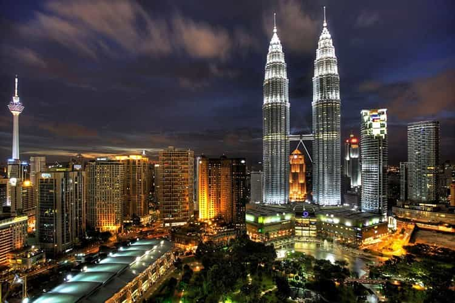

John Carver is a four year ROK veteran with over fifty articles of SJW-triggering truth bombs on archive. You can follow him on Twitter if you are so inclined.


The recent election of Donald Trump has given a renewed sense of hope for the reemergence of traditional masculinity in the United States, and across the western world for that matter. Rather than “Going Galt” to an unnamed non English speaking country as early as possible, red pill men are feeling compelled to remain, fight back, and make their home nations great again.
This is a wonderful development and I encourage and applaud such behavior. However, this does not change the fact that many of us will want to enjoy our later years in much warmer, relaxed, and affordable locales than many of the countries we originally hail from. It is only in human nature (or even survival if money is relatively tight), and the following five countries are very good choices for more conservative leaning men who are over 50.

While many would argue it is too overrun with Westerners, Thailand is a perennially popular destination with retirees for a reason. It is “3rd world” to a very high standard (health care, infrastructure, food selection, street cleanliness and internet speeds are by and large good) and costs are very low when you simply aren’t being involved in any mass tourism activities.
The affordability, delicious food, massages ($6 USD for a one hour Thai massage), relative ease of English-speaking services, and year round warm weather are worth the price of admission alone for many older men, especially from super feminist and heavily overpriced Australia. Lots of Scandinavian men also have an affinity with Thailand for similar reasons.
Key drawbacks of the country are the fact that you will never truly fit in with the local culture (you are little more than a walking and breathing ATM), the shaky political scenarios the country is prone to, and the large amount of scumbag tourists passing through every week. Oh and that whole ladyboy culture as well. Gross.

Malaysia (specifically peninsular Malaysia) is a somewhat more overlooked option in Southeast Asia. This is primarily due to it’s modestly higher costs compared to Thailand, along with it’s Muslim-dominated government which slaps a giant tax on alcoholic beverages.
Nonetheless, Malaysia (and specifically Kuala Lumpur and Penang) is becoming a good choice for retirement due to it’s high standard of health care and infrastructure, warm weather, food choices, relatively low cost of living, strong English language skills, and the fact that the country does not draw any of the degenerate yahoo tourists which infect neighboring Thailand with the never-ending street puking and aura of sexual sleaze.
For single men, the quality of Indian-Malaysian women or Chinese-Malaysian women isn’t too shabby in places like Kuala Lumpur or Penang either. (Some people like to give the false impression that you can’t get laid in this country at all.)
The chief drawbacks of the country for older men are having to live under the clutch of Islam, the high prices of alcohol they enforce, and massage and spa services cost somewhere between two to three times as much as Thailand. However, especially in cosmopolitan Kuala Lumpur and Penang, the Islamic influence is very modest, and there are plenty of opportunities to date the large number of infidels which reside there.
“You are gay” jokes aside, the small nation of Uruguay is a peaceful gem in an otherwise relatively dangerous continent. The country is borderline 1st world, has a stable currency, is not crowded, has decent beaches, and is far removed from many of the most pressing issues in the world (mass migrations, West vs. Islam, etc).
Meanwhile, the women (while somewhat difficult) are quite attractive, and you can smoke all the marijuana to your hearts (and lungs) desire without any fears of criminal punishment. Life here is just very relaxed, very simple, and far removed from the degeneracy of the English-speaking world.
If life here just seems too simple at times, then wild Buenos Aires is just over the River Plate. The southern states of Brazil are also a relatively short drive away if you need a more bustling change of scenery from time to time.
Drawbacks to Uruguay include it’s relative expense (less than Brazil, but one of the highest in Latin America), left-leaning politics, potential boredom / death-by-mate, and how Montevideo doesn’t have a large number of direct flights outside of South America. However, many would argue that the countries semi-isolation helps keep it from being overly inundated with tourists. Thus better maintaining it’s natural character.
You’ve got lots of places to go
Mexico has plenty of attractive and well-maintained spots to enjoy one’s golden years at half the cost of the United States (or twice the luxury).
Thankfully, Americans in particular have been so browbeaten by the lying mainstream media that the entire country is “dangerous” (it’s mainly just the border regions and a few other isolated areas), so only a relatively tiny portion of the more red pilled segment of the population takes the plunge.
The manosphere-friendly author Fred Reed for instance, maintains residence in the beautiful town of Ajijic, Chapala which enjoys a year round average temperature of 22 degrees celsius.
Simply put, you can enjoy San Diego weather in this country at a fraction of the price compared to the US. Additionally, many Western passport holders also get a whopping 180 days visa-free entry, just in case you want to give the retirement life a test run down the line.
Drawbacks to Mexico include it’s (somewhat) more edgy character, the rather tepid treatment of gringos compared to other Latin American countries, the huge infiltration of U.S.-style strip malls filled with Wal-Mart, and having your ears blasted by Mariachi. Nevertheless, Mexico rocks, and it’s not nearly as underdeveloped or dysfunctional as you might think.
A great shining beacon on the old continent. Warm weather, beautiful women, friendly locals, modest prices, well-maintained infrastructure, incredibly rich history, and an approachable language make Spain arguably the best country to just kick back in Europe for your later years.
It’s very close proximity for British, Irish, and other northern European nationalities gives it a fantastic edge, and monthly expenditures in the country can easily be cut in half (or more) compared to the Germanic and Celtic nations.
Drawbacks to Spain include the very huge volume of tourists and expats in many parts of the country, the relatively high degree of feminism (but nothing like Scandinavia), and the fact that well…. it’s still Europe. Things aren’t going to be nearly as cheap as Southeast Asia.
Why did you forget about us?
Some people may now be saying, why no Colombia, Brazil, Ukraine, or the Philippines etc? Why did you leave out my favorite “poosy paradise”? Well please remember that this article was intended for men over 50 in mind.
In Brazil, you are just not going to be picking up your dream-girl beach bunny on the Praia or on Tinder when you are increasingly putting on years, and the crime rate, corruption, high taxes, and expense of the country is just not the type of retirement that most men aspire to. English and Spanish will only get you so far there as well.
Ukraine is too cold, corrupt, unstable, and has far too difficult a local language.
Colombia is nice and is constantly on the improve. However it seems that Medellin is the only place that expatriates want to go (for the weather and the women), and I believe the place highly risks being overrun by Americans in a similar manner to Costa Rica or the Mexican Riviera. It will get increasingly more expensive and a less genuine experience as the years and decades pass.
The Philippines is a logistics nightmare, has poor infrastructure, and has terrible internet and terrible food. However, the latter two things could be improved upon tremendously at any time. For now, it still best serves as a potential wife-hunting destination and not for long-term residence. That’s all, thank you. Oh and learn Spanish if you haven’t already. It’ll come in handy.
Read More: The 15 Best Countries To Teach English